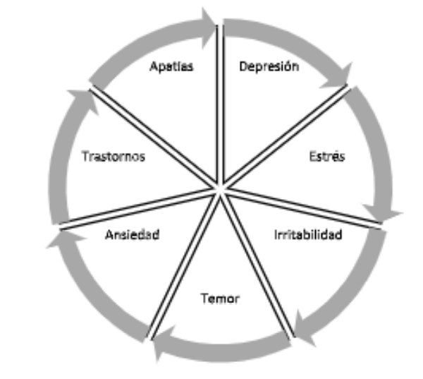
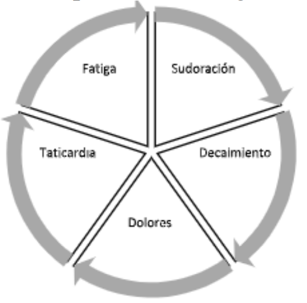
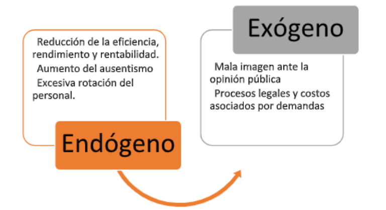

Introducción
El Mobbing es un anglicismo que ha forjado un espacio importante dentro de la realidad
colombiana, no solo por su popularidad y frecuente expresión, sino, lamentablemente, por ser cada
vez más común dentro de las organizaciones. Este concepto, según expresa Giraldo (2005), fue
introducido a las disciplinas administrativas por el etólogo Konrad Lorenz, quien clasificó al
Mobbing como “coaliciones de miembros débiles de una misma especie contra un individuo más fuerte” (p. 209),
es decir que, las agresiones eran de tipo endógeno, pues se producían dentro de la
misma “manada”.
Al migrar este concepto a las realidades de las organizaciones, se tiene que el Mobbing se
puede entender como manifestaciones agresivas y/o abusivas contra condiciones y/o características
propias del individuo (Hirigoyen, 2001), configurándose, según González & Delgado (2008),
como un escenario de violencia psicológica extrema, donde, además de afectar al individuo y su
entorno, las organizaciones se ven afectadas en el cumplimiento de sus propósitos, pues el
rendimiento de los colaboradores disminuye (Orozco, 2014).
Por su parte, Peralta (2006, p. 4), ha definido al Mobbing “como el abuso emocional y las
conductas agresivas y hostiles que se ejercen de manera constante entre compañeros de trabajo y/o
entre superiores y subordinados, acompañadas de comunicaciones negativas y poco éticas”, estas
acciones, según indica González (2007, p. 45), tiene como propósito “desestabilizar y minar
emocionalmente al trabajador con el objetivo de deteriorar su capacidad laboral y desembarazarse
de él, bien sea despidiéndole de la empresa o bien forzando su salida voluntaria”. Lo anterior es
compartido por Ugarte (2012, p. 224), al expresar que: se entenderá por acoso laboral toda acción
o comportamiento, en relación con un empleado o contra el empleado que consiste en un acoso
persistente y de larga duración, o en una intimidación de un empleado como resultado de la
evaluación decreciente de sus capacidades profesionales, así como el que resulta de la intención de
humillar o ridiculizar a un empleado, aislando a él o ella o eliminando a él o ella del equipo de
trabajo.
En definitiva, tal y como define Peralta (2004, p. 113), “el término de hostigamiento laboral
- mobbing-, es sinónimo de intimidar, obligar a otro, afectarlo, abalanzarse o atacar en grupo, e
igualmente se conoce como terror psicológico, agresión laboral, acoso laboral y psicológico”,
ocasionado en las victimas, según indican Justicia, Benítez, Fernández & Berbén (2007),
diferentes afectaciones de tipo físico, psicológico y social, lo que, como es evidente, configuran un
riesgo alto para la salud del colaborador y el rendimiento de la organización (Vilariño, Amado,
Martin & Vázquez, 2020)
Con los argumentos expuestos con anterioridad, es evidente que el Mobbing es un flagelo,
tanto para el trabajador, quien puede desarrollar diferentes patologías y afectaciones, como para
las organizaciones, las cuales se ven afectadas por el bajo rendimiento de sus colaboradores. Es por lo
anterior que el presente manuscrito, producto de un ejercicio de reflexión a partir de la
exploración realizada en fuentes secundarias tales como tesis, artículos y libros, enfoca sus
esfuerzos en presentar los efectos del Mobbing sobre el capital humano y las organizaciones. Para
tal fin, se configuraron tres acápites en la sección de resultados, a saber: Efectos psicológicos del
Mobbing, Efectos físicos del Mobbing, y, por último, Efectos del Mobbing sobre el rendimiento
de las organizaciones. Estas categorías son resultantes de la exploración documental, creadas a
criterio del investigador.
Metodología
El manuscrito se desarrolló bajo un enfoque cualitativo, de alcance descriptivo, apoyado en
la revisión documental a conveniencia realizada en tesis, libros y artículos científicos. El derrotero
de la investigación estuvo orientado por el protocolo de Gómez, Sánchez y Fajardo (2018), el cual
establece las siguientes etapas:
- Búsqueda de información: A través de motores de búsqueda académicos, se auscultaron
documentos relacionados con el “Mobbing”, tales como artículos científicos, tesis de pregrado y
maestría, así como libros.
- Clasificación de los hallazgos: Con los insumos del inciso anterior, se generó una matriz
plana en Word, la cual dividió los hallazgos en virtud de las categorías de análisis definidas, las
cuales, posteriormente se consolidaron como los resultados de la investigación.
- Redacción del documento: En virtud de las categorías establecidas y los respectivos
autores que la soportaban, se procedió a redactar el manuscrito conforme a los parámetros de la
revista, consolidando, tal y como se enunció en la introducción, tres acápites de resultados que dan
cuenta de las múltiples afectaciones que genera en “Mobbing” sobre las organizaciones y sus
colaboradores.
Discusión y Resultados
En este acápite se condensan los hallazgos de la revisión documental, los cuales dan vida a
las tres categorías de análisis descritas en la metodología, a saber:
Efectos psicológicos del Mobbing
Las afectaciones no físicas, es decir, aquellas que transgreden al ser en su esencia y que
repercuten en su salud mental y calidad de vida (Nielsen, Glaso, Einarsen, 2017), son la forma más
común del Mobbing, siendo altamente riesgosas, pues sus marcas y cicatrices lejos de la corporalidad, se
enquistan en la psiquis, dejando huellas más difíciles de borrar que los mismos
golpes. Sobre el particular, De Miguel & Prieto (2016), expresan que quienes desarrollan el
Mobbing pretender generar en sus víctimas “aniquilación o destrucción psicológica y a obtener su
salida de la organización a través de diferentes procedimientos” (p.27). Es decir que, la víctima del
flagelo recibe un sinfín de ataques sobre su integridad emocional con el propósito de que abandone
la organización.
Las patologías que se desarrollan son tan variadas, como las mismas metodologías de
Mobbing y, por supuesto, al ser un asunto que afecta a la condición humana particular, sus efectos
son excesivamente diversos, es decir, dependerán de la víctima y sus condiciones. En palabras de Rosario
& Rovira (2011) “el mobbing puede causar enfermedades
ocupacionales severas e incapacidad para generar ingresos, aislamiento social y hasta suicidio”, lo
que hace evidente las terribles consecuencias de este flagelo sobre sus víctimas. No obstante,
existen algunos síntomas que se repiten con alta frecuencia en las personas víctimas del Mobbing,
a continuación, en la figura 1, se consolidan algunos de ellos:
Figura 1. Patologías psicologías generadas por el Mobbing

Fuente: Elaboración propia a partir de Rosario & Rovira (2011)
Es así como, siguiendo a Ochoa & Layedra (2019), es dable afirmar que el Mobbing,
desde la dimensión psicológica se puede clasificar como un abuso emocional, el cual desencadena
una serie de transformación y mutaciones nocivas de la personalidad y esencia de la víctima,
generando sobre ella profundos daños; además, y sin lugar a dudas, lo más complejo del asunto es
que, tal y como lo afirma Meseguer, Soler & García (2014, p. 576) “el trabajador se siente
cada vez más indefenso y, por tanto, con menos capacidad de controlar el entorno laboral,
reduciendo así sus posibilidades de resolver eficazmente las situaciones problemáticas que se le presentan”,
es decir que este flagelo, lejos de ser algo transitorio, se enquista con el paso del tiempo,
generando daños cada vez más profundos.
En definitiva, tal y como lo afirma Trujillo, Valderrabano & Hernández (2007, p. 80)
“el mobbing o psicoterror se entiende como un síndrome social desencadenado por estresores
sociales, extremo y deliberado, que produce una cascada de efectos negativos”, los cuales, desde
la dimensión abordada (psicológica), pueden llegar al colapso mental del ser humano, de ahí que,
según Pardo (2016), el Mobbing es la enfermedad laboral del siglo XXI.
Efectos físicos del Mobbing
La conexión entre mente y cuerpo es innegable, situación que, desde la dimensión químicabiológica es
explicada por Kort (1995, p. 500), al afirmar que “las emociones están almacenadas
en el cuerpo, en los neuropéptidos, en los receptores, en las células, en los tejidos sólidos que
vibran, tienen energía molecular, cambian a lo que están sujetos, cada vez que interaccionan
aportan mensajes químicos”, es decir que, existe una relación acción-reacción entre la situación
mental de los individuos y sus condiciones físicas. De ahí, con plena observancia de los hallazgos
del acápite anterior, es dable afirmar que el Mobbing también genera efectos sobre las condiciones
físicas del ser humano, deteriorando, no solo su salud mental, sino la corporalidad del individuo.
Al respecto, Fuentes (2008), expresa que el cuerpo somatiza los conflictos de la mente, por
lo que, el Mobbing este asociado al desarrollo de varias patologías. En la figura 2, se presentan
algunas complicaciones comunes detectadas en victimas del prenombrado flagelo. En sintonía con
lo anterior, Trujillo et al (2007, p. 81), expresan que las “víctimas presentan alteraciones físicas
directas que no pueden explicarse de otra manera: son consecuencias del acoso a que estaban
sujetos”, ratificando entonces los efectos nocivos del Mobbing sobre los colaboradores. En este
escenario, conviene retomar lo planteado por Becerra & Guerrero (2012, p. 123), quienes
dentro de su investigación afirman que:
Los datos evidencian que “más de la mitad de las víctimas de Mobbing o Acoso (52%)
refieren secuelas de hostigamiento sobre su salud física, además de su salud psíquica”. Se puede
decir, entonces, que en general la salud de la persona se ve afectada inicialmente a escala individual,
y que luego se amplía a otras esferas de su vida.
Figura 2. Patologías físicas generadas por el Mobbing

Fuente: Elaboración propia a partir de Trujillo et al (2007)
Es decir que, el Mobbing es un caldo de cultivo para la proliferación de las afectaciones
hacia el colaborador, pues, además de las psicológicas que podrían considerarse como la fase
inicial, se gestan una serie de repercusiones sobre las condiciones físicas del individuo (Leterier,
Navarrete, Farfá, 2014), las cuales, impactan negativamente sobre su calidad de vida. En palabras
de Domínguez et al (2012), este escenario configura un nicho perfecto para el síndrome de burnout,
donde las victimas tradicionalmente están sometidas a “estrés postraumático, depresión, intención
de abandono y con las dimensiones de agotamiento emocional y despersonalización” (p. 125).
Efectos del Mobbing sobre el rendimiento de las organizaciones
El Mobbing dentro de las organizaciones, según indica Guglielmi, Panari, & Depolo
(2009), está asociado “con un ambiente laboral de baja calidad y crecientes conflictos de roles, así
como con la insatisfacción con el liderazgo laboral y el clima social” (p.12), lo que conlleva a
concluir que “el acoso y la intimidación son comportamientos sinónimos que erosionan la moral y
la productividad en el lugar de trabajo” (Holis, 2015, p. 3), generando entonces afectaciones sobre
el rendimiento de las organizaciones, toda vez que su activo más importante, el talento humano,
está siendo afectado, y por ende, su rendimiento no es óptimo.
Figura 3. Efectos del Mobbing sobre el rendimiento de las organizaciones

Fuente: Elaboración propia a partir de Trujillo et al (2007)
Los efectos del Mobbing sobre las organizaciones, tal y como se describe en la figura 3,
son de tipo endógeno, donde existe una afectación interna, en procesos tales como la reducción de
la capacidad humana, lo que se traduce en disminución del trabajo a favor de la organización; el
aumento desmedido del ausentismos, especialmente por factores médicos, dadas las condiciones
descritas en el acápite anterior, y, la excesiva rotación del personal, asociada a las constantes
renuncias que se pueden presentar dentro de la organización, en virtud de dicho flagelo. Las de tipo
exógeno, están directamente relacionadas con el posicionamiento de la compañía en estadios
sociales y legales, el primero relacionado con el deterioro de la imagen que la organización ante la
sociedad civil, y, el segundo momento los desgastes y costos asociados a los procesos jurídicos que
se pueden desprender de dicho flagelo. Al respecto, Trujillo et al (2007, p. 82), han expresado que:
La propagación del mobbing en la organización distorsiona la comunicación y la
colaboración entre trabajadores y daña la relación de los individuos que deben realizar tareas en
equipo, lo que altera las condiciones de trabajo y afecta a toda la organización. La Reducción de la
consecuencia de esto es que paulatinamente disminuye la eficiencia de la organización y el clima
laboral deja de ser motivador y retribuyente para el trabajador.
En virtud de lo anterior, es procedente afirmar que la organización es afectada directamente
por el Mobbing, a través de un efecto cascada, pues, sobre el axioma de que son los colaboradores
quienes dinamizan su quehacer misional, cualquier alteración que se presente sobre estos genera
afectaciones sobre su productividad. Lo anterior es ratificado por López, Vázquez y Montes (2010),
quienes sostienen que “un mayor nivel de absentismo laboral, un descenso en la productividad del
individuo y un empeoramiento de la satisfacción laboral” (p.217), lo que, abiertamente, se traduce
en afectaciones negativas para la organización.
Conclusiones
El flagelo denominado “Mobbing” es un enemigo silencioso y letal en las organizaciones,
el cual, además de destruir el clima laboral y la calidad de vida de los colaboradores, compromete
altamente el desempeño organizacional. Desde la dimensión psicológica, las victimas del Mobbing
desarrollan múltiples patologías, las cuales pueden generar daños irreparables sobre la psiquis,
además, como se demostró en el texto, por efecto dominó, la victima desarrolla una serie de
afectaciones físicas que comprometen su salud. Es decir que el Mobbing tiene la potencialidad de
destruir física y mentalmente a los colaboradores.
Desde la dimensión de la productividad, se hizo evidente que el Mobbing, al ser un flagelo
que impacta negativamente a los colaboradores, presenta un efecto cascada sobre la eficiencia de
la organización, pues su principal insumo – el talento humano –, se ve diezmado por sus efectos
devastadores. Además, se logró tipificar que la afectación no es solo interna, pues la imagen
institucional se puede ver altamente afectada por dicho fenómeno. En definitiva, el Mobbing puede
catalogarse como una fuerza contraria al rendimiento organizacional.
Referencias
- De Miguel, V., & Prieto, J. (2016). El acoso laboral como factor determinante en la
productividad
empresarial: El caso español. Perspectivas, 38(1), 25-44.
- Domínguez, J., Padilla, I., Domínguez, J., Martínez, M., Ortega, G., García, M., & Moreno, A.
(2012). Acoso laboral en trabajadores de atención a la salud de Ceuta. MEDICINA Y
SEGURIDAD DEL TRABAJO, 58(227), 117-127.
- Fuentes, R. (2008). Mobbing: Manifestaciones corporales al vivir un proceso de acoso laboral.
Revista Neurología, Neurocirugía y Psiquiatría, 41(1), 13-20.
- Giraldo, J. (2005). Perspectiva del acoso laboral en el contexto colombiano. Diversitas:
Perspectivas en Psicología, 1(2), 205-216.
- Gómez, C., Sánchez, V., Fajardo, M. (2018) Los proyectos y sus dimensiones: una aproximación
conceptual. Contexto 7, 57-64. DOI: https://doi.org/10.18634/ctxj.7v.0i.885
- González, D. & Delgado, S. (2008). Acoso laboral y trastornos de la personalidad: un estudio con
el MCMI-II. Clínica y Salud, 19(2), 191-204.
- González, D. (2007). El acoso psicológico en el lugar de trabajo: una aproximación desde la
psicología forense. Psicopatología Clínica Legal y Forense, 7, 41-62
- Guglielmi, D., Panari, C., & Depolo, M. (2009). Qualità della vita lavorativa e rischio di
mobbing:
l’effetto moderatore del clima sociale. Avances En PsicologÍa Latinoamericana, 27(1), 9-
20
- Hirigoyen, M. (2001). El acoso moral. Barcelona: Paidós.
- Holis, L. (2015). Take the Bull by the Horns: Structural approach to minimize workplace
bullying
for women in American higher education. Oxford Roundtable, 1(1), 1-5
- Justicia, F., Benítez, J., Fernández, E., & Berbén, A. (2007). El fenómeno del acoso laboral
entre
los trabajadores de la universidad. Psicologia en Estudo, 12(3), 457-463.
https://doi.org/10.1590/s1413-73722007000300002
- Kort, F. (1995). Interacción mente-cuerpo. Revista Latinoamericana de Psicología, 27(3),497-501
Letelier, G., Navarrete, E., & Farfà, C. (2014). Síndromes organizacionales: mobbing y burnout.
Revista Iberoamericana de Ciencias, 1(1), 29-40.
- López, M., Vázquez, P. & Montes, C. (2010). Mobbing: Antecedentes psicosociales y
consecuencias sobre la satisfacción laboral. Revista Latinoamericana de Psicología, 42(2),
215-224
- Meseguer, M., Soler, M., & García, M. (2014). El papel moderador de la autoeficacia profesional
entre situaciones de acoso laboral y la salud en una muestra multiocupacional. Anales de
Psicología, 30(2), 573-578. https://doi.org/10.6018/analesps.30.2.161251
- Nilson, M., Glasø, L., & Einarsen, S. (2017). Exposure to workplace harassment and the Five
Factor Model of personality: A meta-analysis. Personality and Individual Differences, 104,
195-206. https://doi.org/10.1016/j.paid.2016.08.015
- Ochoa, C., & Layedra, W. (2019). Labor harassment from a doctrinal and legal perspective.
Revista
Científica Electrónica de Ciencias Gerenciales, 42(14), 5-13.
- Orozco, E. (2014). Efectos en el desempeño por acoso laboral desde la perspectiva de un grupo
de
trabajadores de género masculino de diferentes puestos y organizaciones. (Tesis de
Pregrado). Universidad Rafael Landívar, Guatemala (Guatemala).
- Pardo, V. (2016). El acoso laboral en el ámbito del trabajo. Aspectos Constitucionales el
“Mobbing” en el derecho argentino y la Constitución Nacional. Tesis de Pregrado.
Universidad Empresarial Siglo 21. Córdoba (Argentina).
- Peralta, M. (2004). El acoso laboral - Mobbing- perspectiva psicológica. Revista de Estudios
Sociales, 18(1), 111-122.
- Peralta, M. (2006). Perspectiva del acoso laboral en el contexto colombiano. Psicología desde
el
Caribe, 17(1), 1-26
- Rosario, E. & Rovira, L. (2011). Consecuencias psicológicas del mobbing: estudio empírico de
las
consecuencias psicológicas del mobbing en una muestra de empleados en Puerto Rico.
Revista Interamericana de Psicología Ocupacional, 30(2), 183-199
- Trujillo, M., Valderrabano, M., & Hernández, R. (2007). Mobbing: historia, causas, efectos y
propuesta de un modelo para las organizaciones mexicanas. INNOVAR, 17(29), 71-91.
- Ugarte, J. (2012). El acoso laboral: entre el Derecho y la Psicología. Revista de derecho
(Valparaíso), 39, 221-231. https://doi.org/10.4067/s0718-68512012000200008

 Administrador de Empresas;
Especialista en Gestión Pública; Magister en Ciencias de la Educación.
carlos_gomezca@cun.edu.co,
Corporación Unificada Nacional de
Educación Superior, Cúcuta.
Administrador de Empresas;
Especialista en Gestión Pública; Magister en Ciencias de la Educación.
carlos_gomezca@cun.edu.co,
Corporación Unificada Nacional de
Educación Superior, Cúcuta.